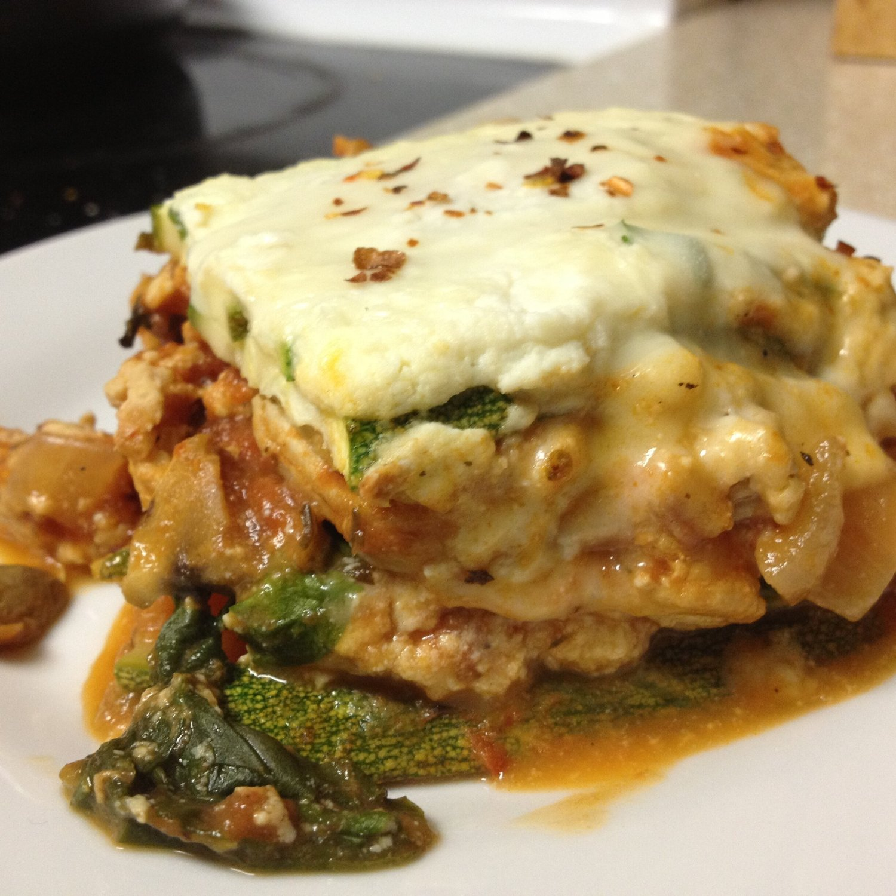

Zucchini Lasagna
I was cooking for my mom about two months ago and whipped up a meal for her to eat over the course of a week. Before leaving it with her, I took a serving of it to try myself and I was SO impressed. I knew it'd taste good, but this was AMAZING. It was warm and comforting and I couldn't resist sharing my creation!

Zucchini LasagnaServes: 6
- 2-3 medium-sized zucchini
- 1 lb lean ground turkey
- 8 oz fresh chopped mushrooms
- 3/4 of an onion, chopped
- 2 cups stewed tomatoes (I use my mom's homemade tomatoes, I'd say this is about a 10-14 oz can?)
- 8 oz can tomato sauce
- 3 TBSP tomato paste
- 3 garlic cloves, diced
- Oregano, Black pepper, Basil, Rosemary, and Thyme
- 1.5 cups reduced fat ricotta cheese
- 1 whole egg
- 2 TBSP fresh parsley, chopped
- 2-3 handfuls of fresh spinach
- 1/4 cup fat free mozzarella cheese
Preheat the oven to 375 F degrees. First, I sliced the zucchini length-wise with a mandolin. I sliced 3 but only needed about 2.5. This will be one of the layers. Then begin to make the meat sauce, which is the second layer. In a skillet sprayed with nonstick spray, cook the ground turkey until just barely browned, then add the mushrooms and onions. Sautee this all together until the onions and mushrooms are soft and the turkey is now fully cooked. Then add the stewed tomatoes, tomato sauce, tomato paste, garlic, and spices. I didn't really measure the spices but basically a LOT of oregano, black pepper, and basil with a little less of the rosemary and thyme. Just keep adding more until you like the flavor :)! I love these flavors so that's why I added a ton. Let it all simmer until it thickens up. If you'd like it thicker, simply add more tomato paste. The last layer is the ricotta. With a fork, mix together the ricotta with an egg and the fresh parsley.
Now the assembling begins. In a 9x13 pan sprayed with nonstick spray, add HALF of the meat sauce to cover the bottom. Then add a single layer of the sliced zucchini just enough to cover the meat sauce. On top of the zucchini, spread out HALF of the ricotta mixture. Then cover the ricotta with a layer of fresh spinach. Add the rest of the meat, another single layer of sliced zucchini, and the rest of the ricotta. Top the creation off with the mozzarella cheese. Cover with aluminum foil and bake at 375 F for 35-40 minutes. Remove the foil and bake for another 10-15 minutes.
I hope you enjoy this! I defffffinitely did!